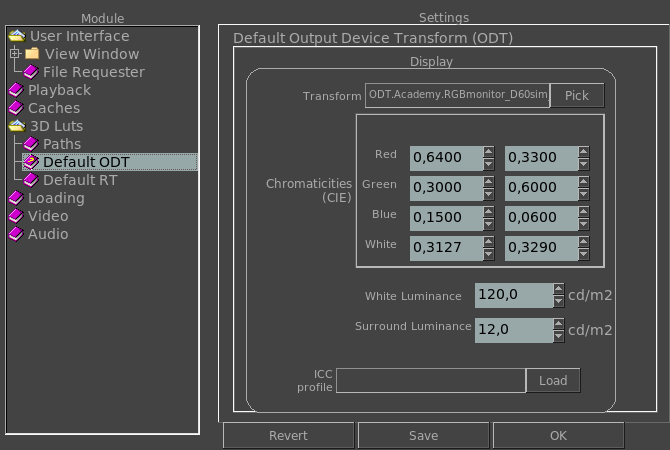

|  |
Default Output Device Transform (ODT)This section allows you to see the default value of the output device transform. The environment variable that controls it is: MRV_ODT_CTL_TRANSFORM This section allows you to set your monitor CIE chromaticities if known. The environment variable that controls it is: MRV_ODT_CTL_CHROMATICITIES This section allows you to set your monitor white luminance if known. The environment variable that controls it is: MRV_ODT_CTL_WHITE_LUMINANCE This section allows you to set the luminance of the environment you are in. The environment variable that controls it is: MRV_ODT_CTL_SURROUND_LUMINANCE This setting allows you to set the display's ICC profile if any. |